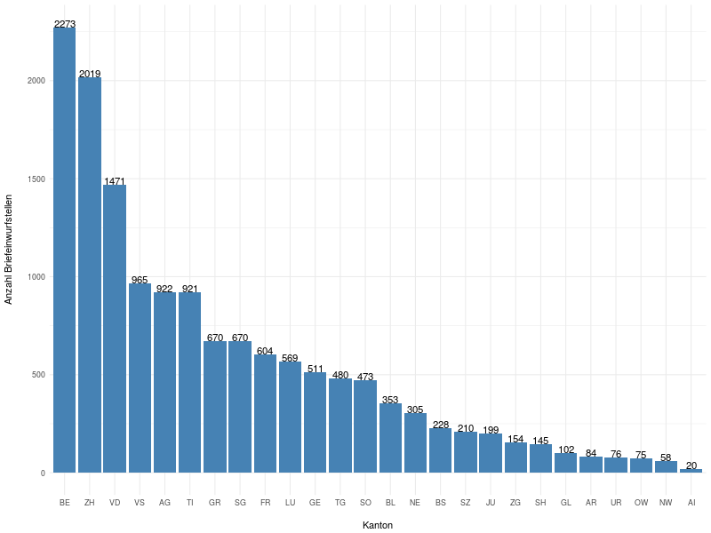
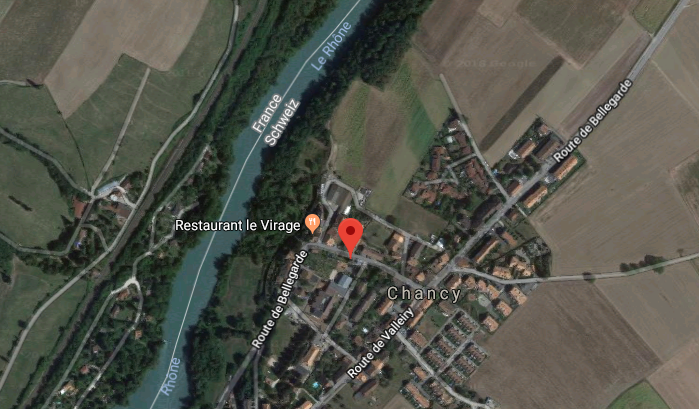

Der einsamste Briefkasten der Schweiz
Und ähnliche Fragen…
Inhaltsverzeichnis
Die Schweiz hat tausende Briefkästen. In einem frei zugänglichen Datensatz auf dem Open Data Portal der Schweizer Post (https://swisspost.opendatasoft.com) sind die genauen Koordinaten von jedem Einzelnen verzeichnet. Welches ist der nördlichste, südlichste, westlichste, östlichste Briefkasten der Schweiz? Welches ist der abgelegenste Briefkasten? Wie weit muss man in der Schweiz maximal gehen, um einen Brief einzuwerfen? Dies sind einige der Fragen in den folgenden Zeilen. Der R-Code ist auch ohne Text in einem separaten File verfügbar.
1 Packages und Data
1.1 Packages
library(ggplot2) library(dplyr) library(raster) library(geosphere) library(tictoc) library(stringr)
| geosphere |
| stringr |
| rworldmap |
| tictoc |
| raster |
| sp |
| RColorBrewer |
| gridExtra |
| reshape2 |
| dplyr |
| devtools |
| ggswissmaps |
| ggplot2 |
| stats |
| graphics |
| grDevices |
| utils |
| datasets |
| methods |
| base |
1.2 Daten
Wir speichern den Datensatz vom Open Data Portal
zugangspunkte-post.csv als CSV im Ordner data.
# Daten einlesen dat <- read.csv("./data/zugangspunkte-post.csv", header=TRUE, sep=";")
1.3 Überblick
Was uns interessiert ist die Variable poityp_de.
# Zusammenfassung der Spalte "poityp_de" mit "Filiale", # "Postfachanlage", "Briefeinwurf" etc. summary(dat["poityp_de"])
poityp_de
Filiale :32916
Postfachanlage :24408
Briefeinwurf :14557
Postomat : 3578
Hausservice : 1329
PickPost-Drittstelle: 472
(Other) : 824
Briefkästen sind die Einträge Briefeinwurf. Wie kommt es, dass es mehr
Filialen und Postfachanlagen gibt als Briefkästen? Der Grund ist, dass
in den Filialen und den Postfachanlagen verschiedene Services
angeboten werden. D.h. es gibt manchmal mehrere Einträge Filiale am
gleichen Ort (geopoint).
# Anzahl der Filialen mit verschiedenen "geopoint"-Koordinaten filialen = dat[dat["poityp_de"]=="Filiale",] paste("Verschiedene Filialen: ", dim(unique(filialen["geopoint"]))[1])
[1] "Verschiedene Filialen: 2168"
[1] "Verschiedene Filialen: 2168"
Das heisst es gibt also "nur" 2168 verschiedene Filialen. Mehrere Einträge pro Anlage gibt es auch bei den Postfachanlagen:
# Anzahl Postfachanlagen mit verschiedenen "geopoint"-Koordinaten postfachanlagen = dat[dat["poityp_de"]=="Postfachanlage",] paste("Verschiedene Postfachanlagen: ", dim(unique(postfachanlagen["geopoint"]))[1])
[1] "Verschiedene Postfachanlagen: 1902"
Bei den Briefeinwurfstellen gibt es offenbar ebenfalls mehrere am gleichen Ort.
bk = dat[dat["poityp_de"]=="Briefeinwurf",] paste("Verschiedene Briefkästen: ", dim(unique(bk["geopoint"]))[1])
[1] "Verschiedene Briefkästen: 14369"
Insgesamt sind es 14557 Briefkästen an 14369 verschiedenen Orten. Bis zu 5 Briefeinwurfstellen sind mit den gleichen Koordinaten eingetragen:
a = table(bk["geopoint"])
head(a[order(a, decreasing=T)])
46.23077572, 6.10762985 47.05002767, 8.3096945 47.54669097, 7.59305232
5 5 5
46.1034836, 7.076093 46.46351733, 6.84172552 46.51696775, 6.62967868
3 3 3
Zum Beispiel am Genf Flughafen:
bk[bk["geopoint"]=="46.23077572, 6.10762985", "POIName_de"]
[1] Briefeinwurf Genève 15 Aéroport, Hall Transit [2] Briefeinwurf Genève 15 Aéroport, Galerie marchande - Niveau départs [3] Briefeinwurf Genève 15 Aéroport, Route de l' Aéroport [4] Briefeinwurf Genève 15 Aéroport, Check-In / Enregistrement [5] Briefeinwurf Genève 15 Aéroport, Secteur France 19007 Levels: 1003 Lausanne Flon My Post 24 ... Tankstelle Yverdon
2 Briefkasten pro Kanton
Wie sind die Briefkästen über die Kantone verteilt? Haben alle Kantone etwa gleich viele Briefkästen? Wohl kaum. Die Kanton haben sind flächenmässig ganz unterschiedlich gross und sind unterschiedlich dicht besiedelt.
kantbk = table(bk["address_kantoncode"])
kantbk = kantbk[order(-kantbk)]
kantbk
BE ZH VD VS AG TI GR SG FR LU GE TG SO BL NE BS 2273 2019 1471 965 922 921 670 670 604 569 511 480 473 353 305 228 SZ JU ZG SH GL AR UR OW NW AI FL 210 199 154 145 102 84 76 75 58 20 0 0
kantbk <- data.frame(kantbk[1:26]) colnames(kantbk) <- c("Kanton", "Anzahl")
p <- ggplot(data=kantbk, aes(x=Kanton, y=Anzahl)) + geom_bar(stat="identity", fill="steelblue") + geom_text(aes(label=Anzahl), vjust=0, hjust=0.5, size=2.8, angle=0, color="black") + xlab("\nKanton") + ylab("Anzahl Briefeinwurfstellen\n") + theme_minimal() p

Abbildung 1: Anzahl Briefeinwurfstellen in den Kantonen.
Tatsächlich gibt es also grosse Unterschiede. Der Kanton Bern hat mehr als 100 mal mehr Briefeinwurfstellen (2273) als der Kanton Appenzell Innerrhoden (20).
3 Karten Briefkästen
bkcoord <- str_split_fixed(bk$geopoint, ",", 2) coords <- data.frame(cbind(as.numeric(bkcoord[,1]), as.numeric(bkcoord[,2]))) colnames(coords) <- c("lat", "lon") bk["lat"] = coords["lat"] bk["lon"] = coords["lon"] coordinates(coords) <- c("lon", "lat") crs.geo <- CRS("+proj=longlat +ellps=WGS84 +datum=WGS84") proj4string(coords) <- crs.geo summary(coords) ch <- getData("GADM", country = "CHE", level = 0) png(file="figures/alle-briefkasten-map.png",width=800,height=600) plot(coords, pch = 20, cex=0.8, col = "steelblue") plot(ch, add = T)
Abbildung 2: Alle Briefkästen der Schweizer Post.
Die Dichte an Briefkasten stimmt ungefähr mit der Siedlungsdichte überein wie die Karte zeigt. Die grossen Siedlungszentren um Zürich, Basel, Genf, Locarno und die Alpentäler sind deutlich auszumachen. Ebenso Gebirge und Seen (wo es keine Briefkästen gibt). Ein Briefkasten ist ausserhalb der Grenzen, am Flughafen Basel.
4 Der südlichste, nördlichste, östlichste, westlichste Briefkasten
Welches ist der südlichste, nördlichste, östlichste, westlichste Briefkasten?
bk[which.max(bk$lat), c("POIName_de", "geopoint")] bk[which.min(bk$lat), c("POIName_de", "geopoint")] bk[which.min(bk$lon), c("POIName_de", "geopoint")] bk[which.max(bk$lon), c("POIName_de", "geopoint")]
POIName_de geopoint
32192 Briefeinwurf Bargen SH, Dorfstrasse 47.7920661, 8.61119639
POIName_de geopoint
67728 Briefeinwurf Pedrinate, Filiale Pedrinate 45.82604626, 9.0128896
POIName_de geopoint
33654 Briefeinwurf Chancy, Route de Bellegarde 46.1499937, 5.97105028
POIName_de geopoint
47917 Briefeinwurf Martina, Via dal Dazi 46.8846352, 10.46374335
Mit Google Street View sind drei der vier Briefkästen leicht zu finden.
Abbildung 3: Nördlichster Briefkasten der Schweiz in Bargen SH
Abbildung 4: Der Südlichste in Pedrinate TI
Abbildung 5: Der Östlichste in Martina GR

Abbildung 6: Der Westlichste in Chancy GE
Wir berechnen noch die Luftliniendistanz vom nördlichsten zum südlichsten und vom westlichsten zum östlichsten Briefkasten.
maxN = which.max(bk$lat) maxS = which.min(bk$lat) maxW = which.min(bk$lon) maxE = which.max(bk$lon) NSWE <- distm(bk[c(maxN,maxW) ,c('lon','lat')], bk[c(maxS, maxE),c('lon','lat')], fun=distHaversine) paste("Nord-Süd: ", round(NSWE[1,1]/1000,3), "km") paste("West-Ost: ", round(NSWE[2,2]/1000,3), "km")
[1] "Nord-Süd: 220.985 km" [1] "West-Ost: 353.681 km"
5 Der einsamste Briefkasten
Welcher Briefkasten ist am weitesten entfernt von einem andern Briefkasten? Für diese Frage berechnen wir eine Matrix mit der Distanzen zwischen allen Briefkästen, was je nach Hardware etwas dauern kann.
require("geosphere") tic("Berechnung der Distanzmatrix") mat <- distm(bk[,c('lon','lat')], bk[,c('lon','lat')], fun=distHaversine) toc()
Berechnung der Distanzmatrix: 522.225 sec elapsed
Wir definieren eine Funktion, um die grössten Spaltenminima zu finden, und deren Indizes in der Distanzmatrix.
col_min <- function(colnr, matr){ # Minimum und position des Minimums in jeder Spalte. m <- which.min(matr[,colnr]) value <- matr[m,colnr] c(m, colnr, value) } get_remotest_n <- function(matr, n){ # Berechnet das grösste Spaltenminimum und die Position in der Matrix. nr_cols = dim(matr)[2] colmins = sapply(1:nr_cols, function(j) col_min(j, matr)) colmins = colmins[,order(-colmins[3,])] colmins[,1:n] }
mat[mat==0] <- NA remotest5 = get_remotest_n(mat, 5)
Die Koordinaten der 5 entlegensten Briefkästen:
a <- data.frame(cbind(remotest5[3,], bk[remotest5[2,], c("POIName_de", "geopoint")])) colnames(a) <- c("Distanz (m)", "Ort", "geopoint") rownames(a) <- 1:5 a
Distanz (m) Ort
1 8828.135 Briefeinwurf Scuol, S-charl
2 7873.248 Briefeinwurf Gruben, Briefkastenanlage Gruben
3 6540.652 Briefeinwurf Arolla, Filiale Arolla
4 6509.128 Briefeinwurf Simplon Dorf, Filiale Simplon Dorf
5 6509.128 Briefeinwurf Gondo, Simplonstrasse
geopoint
1 46.71528382, 10.3346684
2 46.2116481, 7.70619015
3 46.02589014, 7.48131079
4 46.19573661, 8.05531353
5 46.19586667, 8.13978721
Abbildung 7: Briefeinwurfstelle in S-charl
Der abgelegenste Briefkasten steht in S-charl, in einem Seitental des Engadins (möglicherweise von diesem Fotografen eingefangen). Aber auch dieser Briefkasten ist nicht einmal 9 Kilometer Lufliniendistanz vom nächsten Briefkasten entfernt. Weitere ziemlich entlegene Briefkasten findet man im Wallis.
6 Die grösste Entfernung von einem Briefkasten
Die Briefeinwurfstellen in der Schweiz sind so dicht gestreut, dass man sich fragt, wie weit man sich auf Schweizer Boden überhaupt vom nächsten Briefkasten entfernen kann. Wie gross ist die grösste Entfernung von einem Briefkasten in der Schweiz? Wo ist dieser Punkt?
Für diese Frage legen wir einen Raster über die Karte der Schweiz, und berechnen für jeden Punkt im Raster den kürzesten Abstand zu einer Briefeinwurfstelle. Dies ist wiederum eine aufwändige Rechnung, und wir beschränken uns deshalb auf ein ganz grobes Raster von rund 2 km Abständen. Im Landesinnern verpassen wir den gesuchten Punkt im schlimmsten Fall um einen Kilometer.
Zuerst wird der Raster definiert:
library(raster) ch <- getData("GADM", country = "CHE", level = 0) bkcoords <- SpatialPoints(bk[,c("lon", "lat")]) ext <- extent(5.956063, 10.49511, 45.81706, 47.80848) # grobes Raster r <- raster(ext, nrow = 110, ncol = 175) chraster <- rasterize(ch, r)
Dann wird die Matrix berechnet:
tic("Distance matrix") D <- distanceFromPoints(object = chraster, xy = bkcoords) toc()
Von der berechneten Matrix, extrahieren wir die 10 Punkte mit dem grössten Abstand zu einem Briefkasten und deren Koordinaten.
D[which(is.na(chraster[]))] <- NA remotest_n <- function(n, D, raster){ # Extrahiert die n Punkte mit dem grössten Abstand zu einem # Briefkasten und deren Koordinaten. rem_n = head(order(values(D), decreasing=T), n) coords = xyFromCell(raster, rem_n) res = data.frame(cbind(values(D)[rem_n], coords[,2], coords[,1])) colnames(res) = c("Distanz (m)", "lat", "lon") rownames(res) = 1:n res } remotest_10 = remotest_n(10, D, chraster) remotest_10
Distanz (m) lat lon 1 12998.13 45.91663 7.421527 2 12749.16 45.91663 7.395589 3 12067.52 45.91663 7.369652 4 11248.25 45.91663 7.343715 5 11140.89 45.93473 7.421527 6 11098.84 46.38733 9.911518 7 10943.36 45.93473 7.395589 8 10745.86 46.51406 10.041205 9 10710.85 46.53216 8.121837 10 10616.25 46.56837 8.173712
png(file="figures/schweiz-distance-110-175.png",width=800,height=600)
plot(D)
Abbildung 8: Kein Höhenprofil sondern die Luftliniendistanz zum nächsten Briefkasten (in Metern).
Die Punkte mit dem grössten Abstand zu einem Briefkasten sind im Wallis hinter dem Grand Combin an der Schweiz-Italienischen Grenze, etwas mehr als 13 km vom nächsten Briefkasten entfernt. Unsere Schätzung ist bei dem groben Raster noch reichlich ungenau und könnte bis zu einem Kilometer daneben liegen. Mit einem feineren Raster, etwas Geduld oder besserer Hardware könnte man den Punkt noch genauer bestimmen.
7 Zusammenfassung
Die 14'369 Briefeinwurfstellen der Schweizer Post sind recht dicht über das bewohnte Gebiet der Schweiz verteilt. Von einem Briefkasten in der Schweiz zum nächsten sind es allerhöchstens 8.8 km Luftlinie. Zudem gibt es keinen Punkt im gesamten Gebiet der Schweiz, der weiter als etwa 14km von einem Briefkasten entfernt ist (13 km plus möglicherweise 1 km Fehler). Vom nördlichsten zum südlichsten Briefkasten sind es 220.985km, vom westlichsten zum östlichsten sind es 353.681 km.